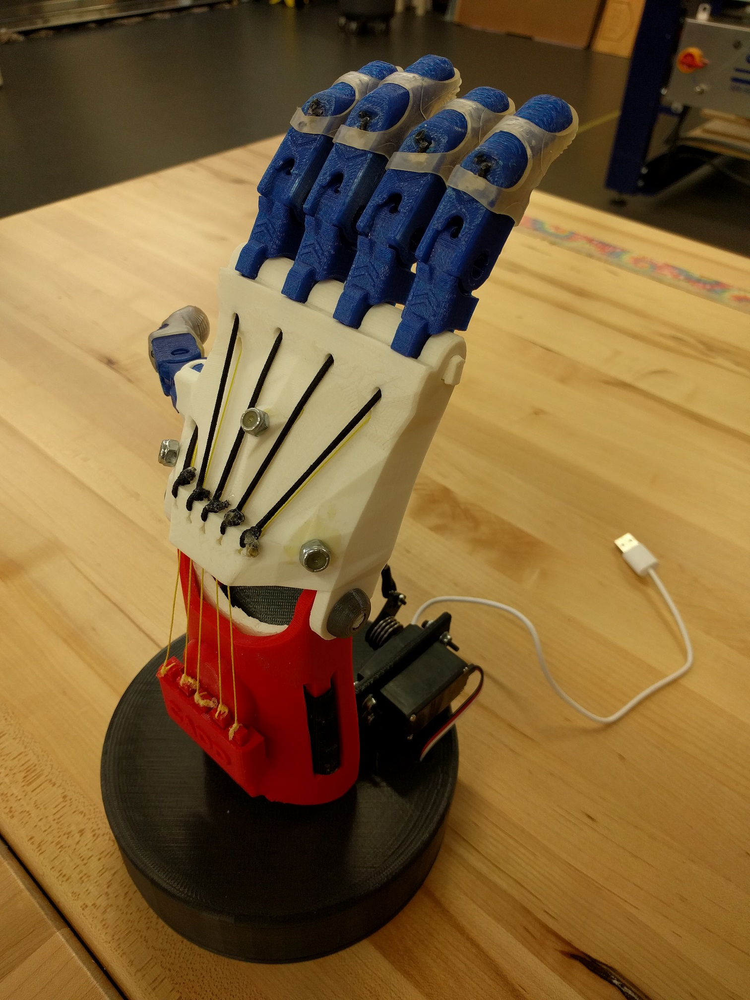
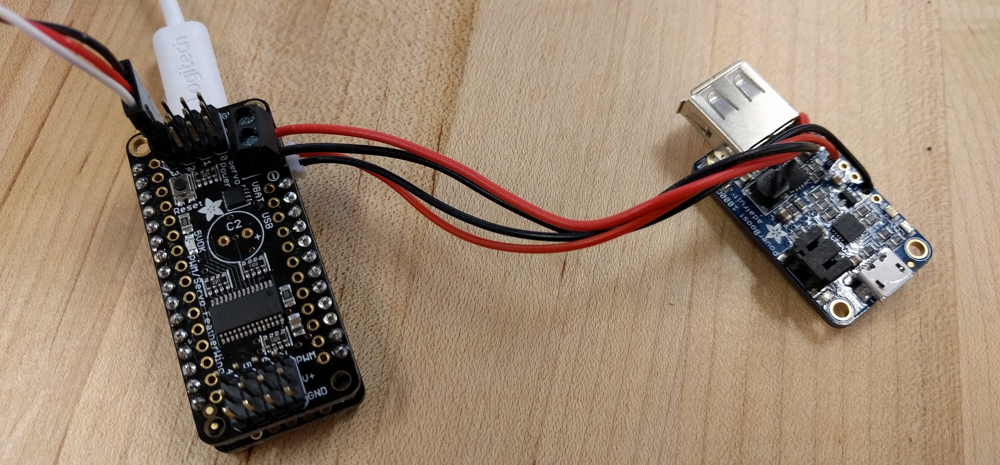

Instructions for "Thing" hand

-
Check to see if Arduino is installed, and install if necessary
-
Check to see if Arduino IDE has the Adafruit Feather 32u4 board included by looking in the "tools >> board" menu of
the IDE. If the board is not included in your installation of the Arduino IDE (likely if you just installed it) then
you should follow these instructions from
Adafruit.com to include it.
-
Check to see if Arduino IDE has the Adafruit PWM/Servo Driver Library included by look in the "Files >> Examples" area
of the menu to see if the library is already installed in the IDE. IF the Library is installed, you will see it named
in that section of the menu. If the library is not included in your installation of the Arduino IDE (likely if you just
installed it) then you should follow
these instructions from Adafruit.com to include it.
-
Next you should open the arduino file and connect the feather board to the computer. Be
careful to make sure that you connect the 'Feather 32u4' board and not the PowerBoost 1000 Charge' board to the computer
via microUSB. [Note: Some USB cables are just intended for charging, and don't have a data connection. Avoid These...]
-
At this point you can make any changes you would like to make to the code. Save the changed file with a new name (so as to
not to alter the original).
-
Make sure that the correct port is selected, and then upload (CTRL+U) the sketch to the Feather board.
-
Open up the serial monitor (CTRL+SHIFT+M) and see the serial ouput from the board, if you are interested in debugging or
checking up on things.
